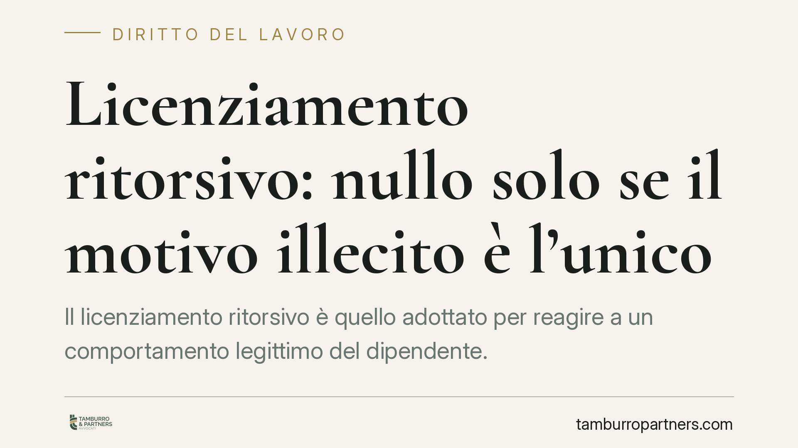

Licenziamento ritorsivo: nullo solo se il motivo illecito è l'unico
Il licenziamento ritorsivo è quello adottato per reagire a un comportamento legittimo del dipendente. La giurisprudenza chiede però un requisito stringente: il motivo illecito deve essere l'unico e determinante. Se al recesso concorre una ragione lecita, la natura ritorsiva si esclude. Un principio con effetti concreti su prova e tutele.

Il caso e il principio
Il tema torna ciclicamente davanti alla Corte di Cassazione, Sezione Lavoro, con un orientamento ormai consolidato: il licenziamento è ritorsivo — e quindi nullo — solo quando il motivo illecito è unico ed esclusivo. Non basta che una ritorsione sia in qualche modo presente nel percorso decisionale del datore di lavoro.
Ritorsivo è il recesso adottato per reagire a una condotta lecita del lavoratore: una denuncia, una richiesta di differenze retributive, la partecipazione a un'iniziativa sindacale, una testimonianza sgradita. In questi casi il licenziamento non ha una vera giustificazione, ma serve a punire chi ha esercitato un proprio diritto.
La Corte precisa due piani distinti, spesso confusi. Il primo è l'assenza di un comportamento oggettivamente censurabile del dipendente: se manca l'inadempimento, viene meno la giustificazione del recesso. Il secondo, decisivo per la qualificazione ritorsiva, è l'esclusività del motivo illecito. Se accanto all'intento punitivo esiste anche una ragione lecita che avrebbe di per sé giustificato il licenziamento, il carattere ritorsivo non si configura.
Inquadramento normativo
Il fondamento sta nel combinato disposto degli articoli 1345 e 1418, secondo comma, del Codice civile. L'art. 1345 c.c. sancisce la nullità del contratto — e per estensione dell'atto unilaterale di recesso — quando le parti si sono determinate esclusivamente per un motivo illecito comune. La giurisprudenza traspone questo schema al licenziamento: il recesso è nullo quando il motivo illecito è stato l'unica ragione determinante.
Da qui la parola chiave: esclusività. Non è sufficiente provare che il datore fosse animato anche da rancore o intento punitivo. Occorre dimostrare che quello è stato l'unico motore della decisione, escludendo la coesistenza di una causale legittima autonomamente idonea a sorreggere il licenziamento.
Il nodo probatorio
L'onere della prova grava sul lavoratore, che deve dimostrare la natura ritorsiva del recesso. Trattandosi di un intento — un elemento soggettivo difficilmente documentabile in modo diretto — la giurisprudenza ammette la prova per presunzioni ai sensi dell'art. 2729 c.c.
Il lavoratore può cioè offrire indizi gravi, precisi e concordanti: la vicinanza temporale tra la condotta lecita e il licenziamento, l'assenza o la pretestuosità della motivazione addotta, il trattamento differenziato rispetto ad altri dipendenti in situazioni analoghe. Da questi elementi il giudice può risalire, per inferenza logica, all'esistenza del motivo illecito esclusivo.
Resta però il limite dell'esclusività: se il datore dimostra una ragione lecita concorrente e sufficiente, la ricostruzione presuntiva del lavoratore cade.
Implicazioni pratiche
Per il lavoratore, la difficoltà non è tanto percepire la ritorsione quanto provarla in giudizio. Un licenziamento formalmente motivato da esigenze organizzative o da un addebito disciplinare può nascondere un intento punitivo, ma dimostrarne l'esclusività richiede una costruzione probatoria solida.
Per l'azienda, il messaggio è speculare: la presenza di una motivazione lecita, reale e documentata riduce sensibilmente il rischio che il recesso venga qualificato come ritorsivo.
Sul piano sanzionatorio occorre distinguere. Il licenziamento nullo per motivo illecito determinante comporta la tutela reintegratoria piena, sia sotto il regime dell'art. 18 dello Statuto dei lavoratori (L. 300/1970) per i rapporti anteriori, sia ai sensi dell'art. 2 del D.Lgs. 23/2015 per gli assunti dal 7 marzo 2015. In entrambi i casi la nullità da motivo illecito resta nell'alveo più protettivo: reintegrazione nel posto di lavoro e risarcimento del danno. È un regime diverso e più forte rispetto a quello previsto per altri vizi, che possono comportare la sola tutela indennitaria.
Cosa fare in concreto
Per il lavoratore:
- Conserva ogni documento che colleghi il licenziamento a una tua condotta lecita: e-mail, denunce, richieste, comunicazioni sindacali.
- Annota la cronologia degli eventi: la prossimità temporale è un indizio rilevante ex art. 2729 c.c.
- Verifica la coerenza e la solidità della motivazione formale del recesso.
Per l'azienda:
- Documenta in modo puntuale la ragione lecita e autonoma alla base del licenziamento.
- Evita decisioni assunte a ridosso di iniziative legittime del dipendente senza adeguata istruttoria.
In ogni caso è opportuna una valutazione tecnica preliminare della posizione, alla luce del regime applicabile e del materiale probatorio disponibile.
Disclaimer
Contributo informativo a cura di Tamburro & Partners – Avv. Giuseppe Tamburro. Non costituisce parere legale.
Ogni storia di lavoro ha i suoi tempi.
Se gestisci HR e vuoi un confronto su contenzioso, ispezioni o licenziamenti, scrivi allo studio. Ti rispondiamo entro un giorno lavorativo.